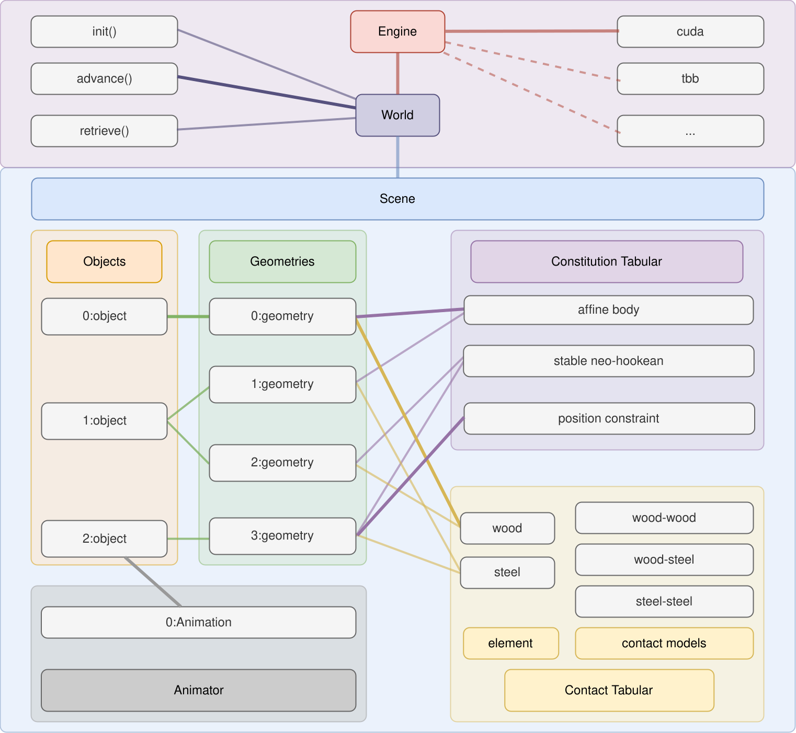

Libuipc is a library that offers a unified GPU incremental potential contact framework for simulating the dynamics of rigid bodies, soft bodies, cloth, and threads, and their couplings. It ensures accurate, penetration-free frictional contact and is naturally differentiable. Libuipc aims to provide robust and efficient forward and backward simulations, making it easy for users to integrate with machine learning frameworks, inverse dynamics, robotics, and more.
We are actively developing Libuipc and will continue to add more features and improve its performance. We welcome any feedback and contributions from the community!

.cursor/ for built-in commands (build, test, commit, PR workflows) and rules (C++ style, project structure, commit conventions).pip install pyuipc. For the early test version, we support Win/Linux, Python 3.10–3.13 with CUDA 12.8.@article{stiffgipc2025,
author = {Huang, Kemeng and Lu, Xinyu and Lin, Huancheng and Komura, Taku and Li, Minchen},
title = {StiffGIPC: Advancing GPU IPC for Stiff Affine-Deformable Simulation},
year = {2025},
publisher = {Association for Computing Machinery},
volume = {44},
number = {3},
issn = {0730-0301},
doi = {10.1145/3735126},
journal = {ACM Trans. Graph.},
month = may,
articleno = {31},
numpages = {20}
}
@article{gipc2024,
author = {Huang, Kemeng and Chitalu, Floyd M. and Lin, Huancheng and Komura, Taku},
title = {GIPC: Fast and Stable Gauss-Newton Optimization of IPC Barrier Energy},
year = {2024},
publisher = {Association for Computing Machinery},
volume = {43},
number = {2},
issn = {0730-0301},
doi = {10.1145/3643028},
journal = {ACM Trans. Graph.},
month = {mar},
articleno = {23},
numpages = {18}
}